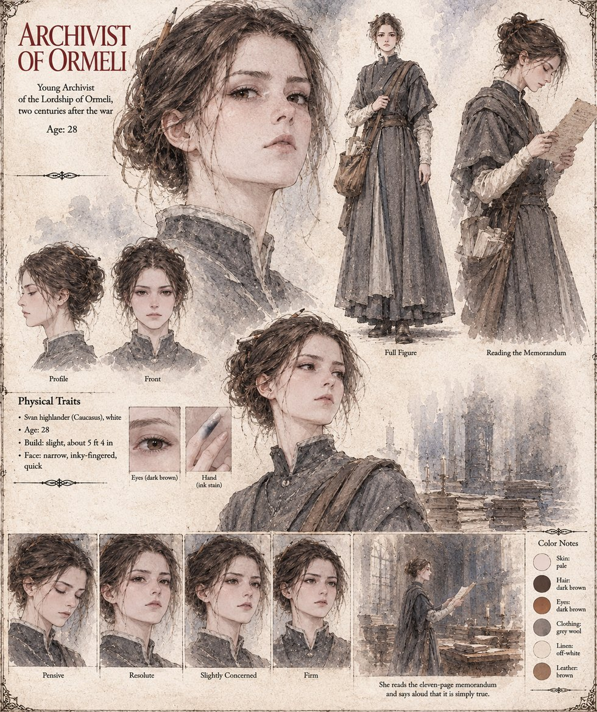

Archivist of Ormeli
Young archivist of the lordship of Ormeli · two centuries after the war · unnamed · 28 on her sheet
She has the last paragraph of the story, and one line. Two hundred years after Ketevan’s death, when the ledger that was placed in the strongroom in the velvet case where the dead arrow had once lain is opened at last, a young archivist of the lordship of Ormeli reads, on the eleventh page of the memorandum filed in its back pocket, the line that says the sky answers in proportion to the picture. She said aloud, to nobody, in an empty room, “But this is simply true,” and was told by her superior that the matter had been settled long ago in the Chronicle of the Fourth Crown.
That is all. The manuscript gives her no name, age, face or voice, and does not say whether she pursued it. It is the Epilogue’s last word on the ledger: Gurgen’s Chronicle still stands, two centuries on, for the settled view, and the line Ketevan set down in the winter of the fourteenth year is read at last by someone who needs no persuading.
The sheet’s age of 28, slight build of about 5 ft 4 in, narrow, quick, inky-fingered face, dark brown eyes, dark brown hair in a loose knot with a pencil through it, grey wool dress with off-white linen sleeves and a brown leather satchel are its own, as are its panels Pensive, Resolute, Slightly Concerned and Firm. Its scene, She reads the eleven-page memorandum and says aloud that it is simply true, follows the manuscript.
“But this is simply true.”